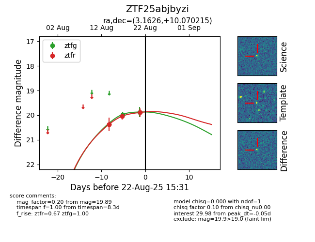

Target ZTF25abjbyzi at 2025-08-22 16:11, see:
FINK: fink-portal.org/ZTF25abjbyzi
Lasair: lasair-ztf.lsst.ac.uk/objects/ZTF25abjbyzi
ALeRCE: alerce.online/object/ZTF25abjbyzi
alt names
ZTF25abjbyzi (ztf,alerce)
coordinates:
equatorial (ra, dec) = (3.1626,+10.07021)
galactic (l, b) = (107.4359,-51.63073)
photometry
last atlaso=19.95, ztfg=19.87, ztfr=19.89
1 atlaso, 2 ztfg, 4 ztfr detections
